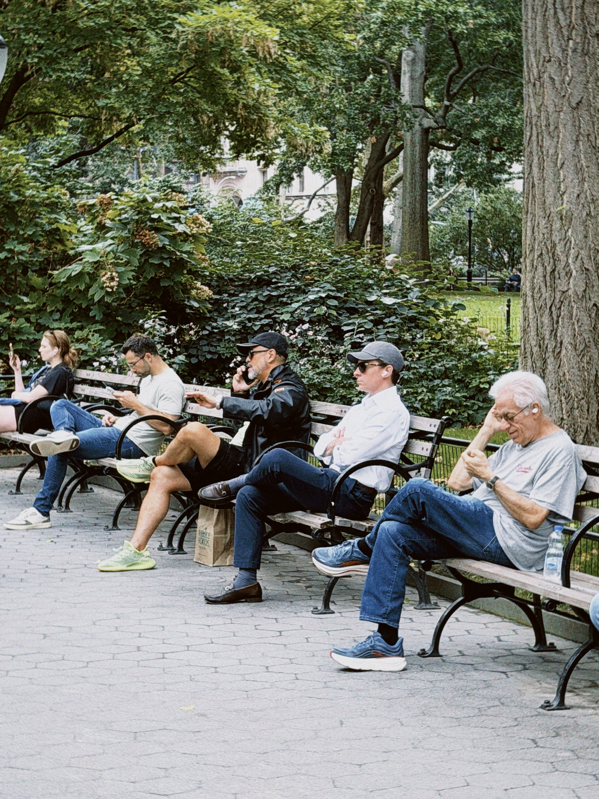

sit with me.
Look
Write
Notes
Sit with
me.
A pause to share space, notice the city, and be here together.
Look →

The city around us
＋ Add photos
A moment to notice
Another question
Save
Clear
What we keep
0 notes
0 photos
All
Write
Photos
Arrange
Close ×
Close ×
☼